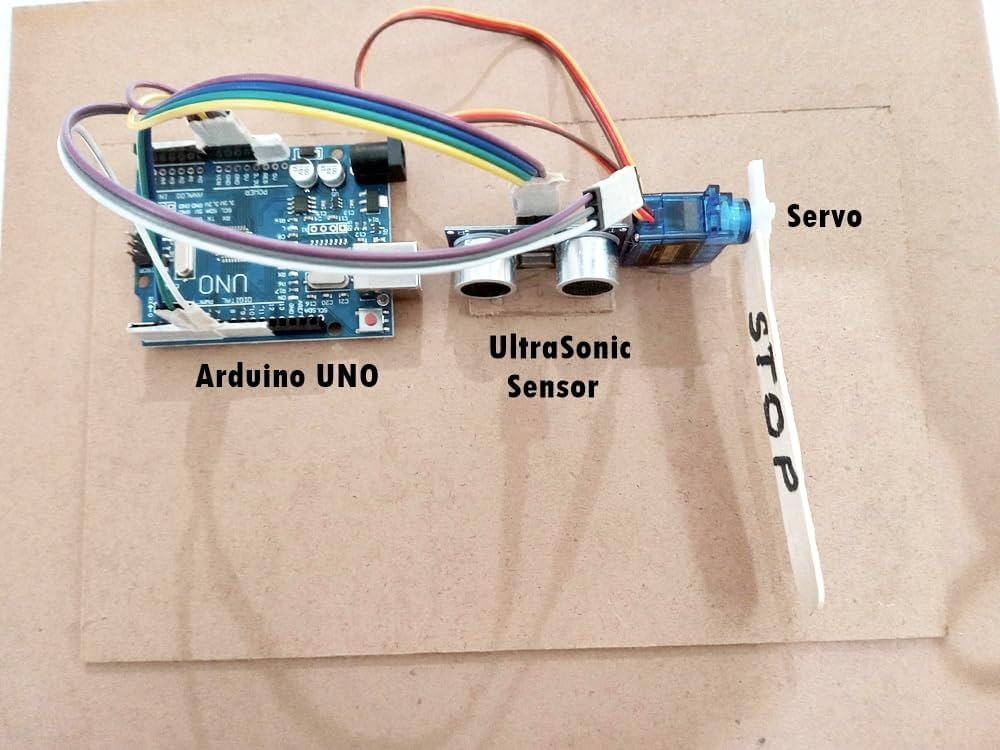

Automatic Boom Barrier Using Arduino

An Automatic Boom Barrier is a motorized gate system that controls vehicle access at entry and exit points, commonly used in parking lots, toll booths, and security checkpoints. It operates using an Arduino microcontroller along with various sensors and actuators.
Working Principle:
Sensors (IR/Ultrasonic/RFID): Detect an approaching vehicle or authorized entry.
Arduino Microcontroller: Processes input signals from sensors and controls the motorized boom barrier.
Servo Motor/DC Motor: Mechanically lifts and lowers the boom arm.
Power Supply: Provides energy to the Arduino, motor, and sensors.
Optional Features: Can integrate RFID for authorized access, GSM for remote control, or IoT for smart monitoring.
Operation:
Vehicle Detection: A sensor (IR or Ultrasonic) detects an approaching vehicle.
Authorization (Optional): If RFID or keypad authentication is used, only registered vehicles can pass.
Boom Arm Opens: The Arduino triggers the motor to lift the barrier.
Wait Period: The boom remains open for a set time or until the vehicle passes.
Boom Arm Closes: Once the vehicle crosses an exit sensor, the barrier closes automatically.
This project enhances security, reduces human intervention, and improves traffic management efficiency. Would you like a circuit diagram or Arduino code for implementation? 🚦🔧
Source Code
You can find the source code for this project on Txt file.
Back to Projects